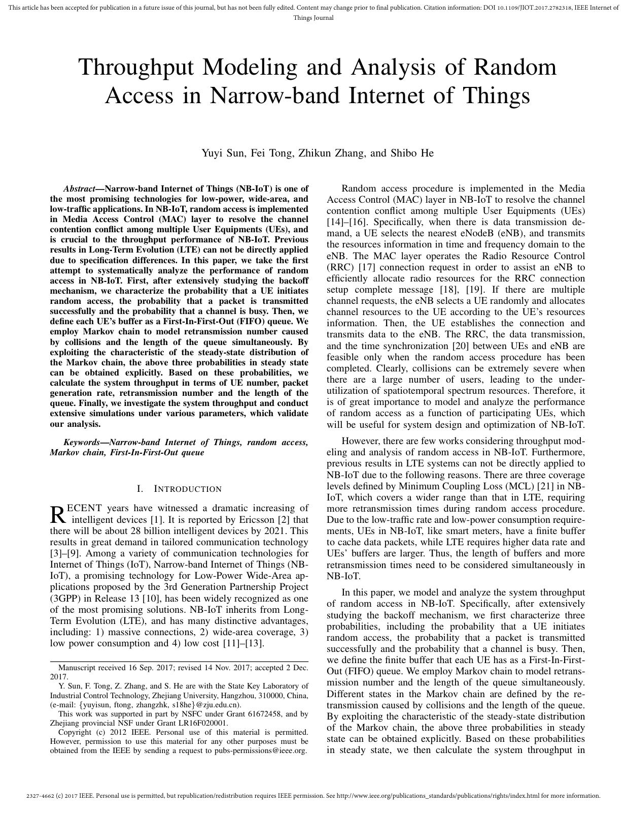

Throughput Modeling and Analysis of Random Access in Narrow-band Internet of Things
IEEE Internet of Things Journal, 2018

Abstract
Narrow-band Internet of Things (NB-IoT) is a key LPWAN standard designed for massive machine-type communications. In this paper, we model and analyze random access behavior in NB-IoT, considering repeated preamble transmission, collision dynamics, and access delay under practical network settings. We derive analytical expressions for throughput and related performance metrics, and validate them with simulation. The results provide useful guidance for NB-IoT random-access configuration and network planning.
Citation
@inproceedings{STZH18,
author = {Yuyi Sun and Fei Tong and Zhikun Zhang and Shibo He},
title = {{Throughput Modeling and Analysis of Random Access in Narrow-band Internet of Things}},
booktitle = {{Internet of Things Journal}},
publisher = {IEEE},
year = {2018},
}